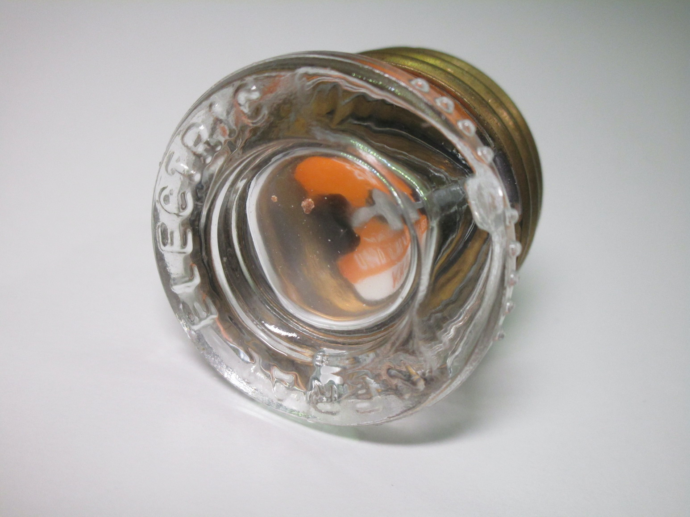
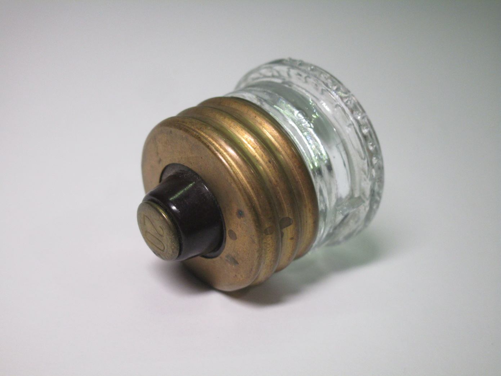
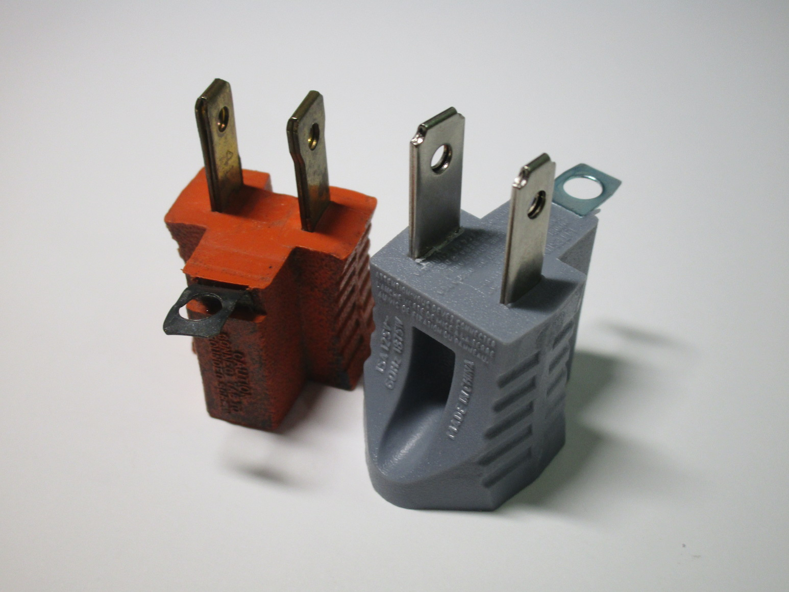
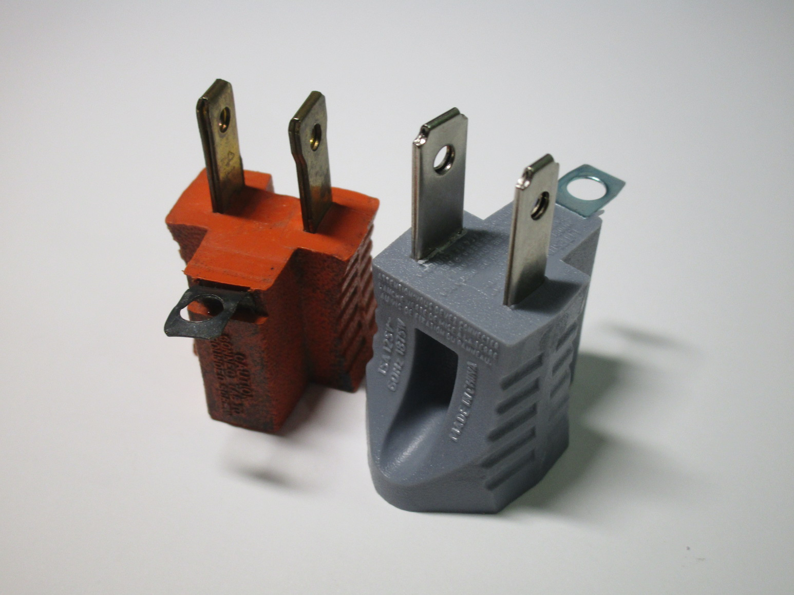

Electrical items from North America
Power sockets
Standard 15A outlets
Rating: 15A 125V


Wiring, fuses and breakers
Vintage Edison screw fuses
This is the style of fuse that was commonly in use in North America before breakers were common. These fuses use an Edison screw socket, the same used in lamp holders, and were generally made of glass (although newer ones use plastic with a window on the top) in order to see if the fuse was blown and also to read the label where its rating was shown.
The major flaw with these styles of fuses was that, since they all used an E26 socket, it was very easy to swap them with one of a higher rating, which is very dangerous and can potentially cause a fire. While other designs of cartridge fuse, like the Diazed fuses used in most of continental Europe, solved this problem by having different sizes of fuse, that wasn't possible with this style because of its design.
 {kind=link}
{kind=link}
Later on a solution was created in the form of a different type of fuse, the S-style fuses, which made using the wrong fuse more difficult while still retaining compatibility with existing panels (thanks to a fixed section that screwed into the normal E26 socket and was meant to be hard to remove for a normal user). However, these weren't as common as the normal style of fuses and thus the problem persisted.
Adaptors
Ground defeater adaptor
This adaptor converts a 2-pin outlet into a 3-pin one, with a tab meant to be used for the earth connection. In theory it's supposed to be used only with a socket that is 2-pin but has a grounded wall-box: the tab would connect to the screw holding the faceplate and thus would make it possible to connect devices which need an earth connection safely.
In practice however, it's just used to bypass the earth connection entirely in old houses that lack it. It's a very well known thing, with its intended purpose likely just being an excuse to keep selling these adaptors - if you really did have a house with a grounded box it'd make more sense to replace the socket instead of using one of these with the likely old and crusty original one.
 

{kind=link}
Lamp socket to power outlet adaptor
This adaptor screws to a normal lamp socket and converts it to two 2-pin power outlets, allowing the user to plug in electrical devices in situations where they wouldn't otherwise be available. It also features a pass-through lamp socket to connect a lightbulb, with a pullcord to turn it on or off.
Adaptors like these (often called "current stealers" or "current taps") were used a lot in the early days of
electricity around the world, since, as at the time it was mainly used for lighting and appliances were fairly
uncommon, very few power sockets were generally present in a room.
However, these were only available in Europe until the 50s/60s, and their only use nowadays is as a collector's
piece as there is no practical reason to use one of these.
It was very surprising, then, when I found out that it still possible to buy brand new versions of these in
North America, and that they're still sometimes used for certain applications.
{kind=link}
{kind=link}
Simpler versions of these are also available, which only contain one power outlet and no pass-through for lamps, which are much smaller and could be useful for temporary use.
Notably, both of these adaptors have a very limited rating (max 660W), understandably so since lamp sockets aren't generally designed to handle large amounts of current, although as there is no fuse or breaker to actually enforce this it's up to the user to be careful with their use.

{kind=link}